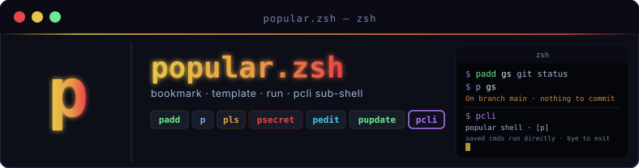

Tiny zsh shortcuts for saving, running, and templating your most-used commands — with AES-256-CBC encrypted secret placeholders kept out of exported files.
curl -fsSL https://raw.githubusercontent.com/sajjadRabiee/popular-zsh/main/install.sh | zsh
Save commands by name, or grab a line straight from your shell history by event number.
— hover to preview
Run a saved command. Templates expand
{{opt}},
[[pos]], and
<<secret>>
before exec.
Copy a rendered command to the clipboard instead of running it — useful for
pasting into a remote SSH session or a chat window.
Uses pbcopy on macOS,
wl-copy on Wayland,
or xclip on X11.
Browse saved commands with template hints and secret markers shown inline.
— hover to previewStore sensitive values encrypted with AES-256-CBC. A master password is prompted once per session and cached in memory — never written to disk.
— hover to previewClear the cached master password from the current shell session. The next secret access will re-prompt.
— hover to previewEdit the full store or a single command in your preferred editor ($EDITOR or vim).
Drop into a sub-shell where saved names work directly — no p prefix. Tab completion included.
Back up, share, or merge command stores. Import directly from a GitHub repo with -R. Exports never include secrets — safe to commit.
Upgrade a v1 plain-text secrets file to the v2 AES-256-CBC encrypted format in one command.
— hover to previewChange your master password and re-encrypt every secret in place. If the old password is lost, wipes all secrets and starts fresh — no way to recover without the original key.
— hover to previewPull the latest popular.zsh and all modules from GitHub in one command.
Three placeholder styles let you turn saved commands into small, reusable generators.
| Syntax | Style | How to pass a value |
|---|---|---|
| {{name}} | Named option | p cmd --name=value |
| [[name]] | Positional | p cmd value (left-to-right order) |
| {{name:default}} | Option with default | Omit the flag to use the stored default |
| [[name:default]] | Positional with default | Omit the arg to use the stored default |
| <<key>> | Secret (encrypted) | Set once with psecret -g key; encrypted at rest, never in exports |
$ padd serve 'python3 -m http.server [[port]]' $ p serve 8000
$ padd serve2 'python3 -m http.server {{port}}' $ p serve2 --port=8000
$ padd hit 'curl -s http://[[host]]:{{port}}/' $ p hit localhost --port=8080
$ padd hook 'curl -H "Auth: Bearer <<token>>" $URL' $ psecret -g token master password: •••••••• Enter value for token: •••••••• $ p hook # token injected at runtime
Secret values are encrypted at rest with AES-256-CBC (openssl, PBKDF2). A master password is prompted the first time you access secrets in a shell session and cached in memory — it is never written to disk.
Requires openssl on your
PATH
(pre-installed on macOS; apt install openssl on Linux).
On first psecret call, you are prompted for a master password. All subsequent secrets in that session use it without prompting again.
When you run p <name>, each <<key>> placeholder is decrypted on the fly and substituted before exec.
Run plock to wipe the master password from memory. The next secret access will prompt again.
Already have secrets? Run psecret-migrate once to re-encrypt the file under AES-256-CBC. A .bak is kept until you remove it.
Run psecret-reset to change your master password. If you still have the old one, all secrets are re-encrypted in place. If the old password is lost, secrets are wiped and you start fresh.
Drop into a sub-shell where every saved name works as a first-class command.
A [p] badge
appears on the right side of your prompt so you always know you're inside the session.
Tab completion is fully available. Type bye
to return to your normal shell.
$ pcli popular shell — saved names work directly · bye to exit sajjad@mac ~ [p] → gs # runs your saved "gs" command directly On branch main · nothing to commit → list # alias for pls → add up 'docker compose up -d' → up # runs it immediately → bye
Commands and secrets live in two separate files. Both paths can be overridden with environment variables.
Each command line is name|command.
pexport only writes the commands file —
never the secrets file — so exports are safe to share or commit to version control.
Select a command, fill in the arguments, and run it to see realistic simulated output.
← Select a command and click Run.
popular.zsh is written for zsh, but bash, fish, and nushell users can use it too — as long as zsh is installed. The installer injects thin wrapper functions automatically. All shells share the same backing file.
# Add to ~/.bashrc _p_zsh() { zsh -c "source ~/.popular-zsh/popular.zsh 2>/dev/null && \"\$@\"" -- "$@"; } p() { _p_zsh p "$@"; } padd() { _p_zsh padd "$@"; } pls() { _p_zsh pls "$@"; } premove() { _p_zsh premove "$@"; } pedit() { _p_zsh pedit "$@"; } psecret() { _p_zsh psecret "$@"; } plock() { _p_zsh plock ; } pupdate() { _p_zsh pupdate ; } pcli() { zsh -i -c "source ~/.popular-zsh/popular.zsh 2>/dev/null && pcli"; }
# Add to config.fish function _p_zsh set cmd $argv[1]; set -e argv[1] zsh -c "source ~/.popular-zsh/popular.zsh 2>/dev/null && $cmd \"\$@\"" -- $argv end function p; _p_zsh p $argv; end function padd; _p_zsh padd $argv; end function pls; _p_zsh pls $argv; end function psecret; _p_zsh psecret $argv; end function plock; _p_zsh plock; end function pupdate; zsh -c "source ~/.popular-zsh/popular.zsh 2>/dev/null && pupdate"; end function pcli; zsh -i -c "source ~/.popular-zsh/popular.zsh 2>/dev/null && pcli"; end
# Add to config.nu def p [...rest] { zsh -c $"source ~/.popular-zsh/popular.zsh && p ($rest | str join ' ')" } def padd [...rest] { zsh -c $"source ~/.popular-zsh/popular.zsh && padd ($rest | str join ' ')" } def pls [...rest] { zsh -c $"source ~/.popular-zsh/popular.zsh && pls ($rest | str join ' ')" } def pcli [] { zsh -i -c "source ~/.popular-zsh/popular.zsh && pcli" }
A popular-pack is any GitHub repo with a
commands.pop file in the standard
name|command format.
Import any pack directly — no download, no copy-paste.
$ pls gs git status dps docker ps kgpa kubectl get pods -A aws-ls aws s3 ls s3://[[bucket]]/ tfinit terraform init psql-conn psql -h [[host]] -U [[user]] -d [[db]] redis-get redis-cli get [[key]] nmap-scan nmap -sV -sC -oN [[output]] [[target]] … and 992 more
pimport -R sajjadRabiee/popular-zsh-pack
Ship your own pack:
create a repo, add a commands.pop file,
and share pimport -R owner/repo with your team.
Any branch or raw URL works.